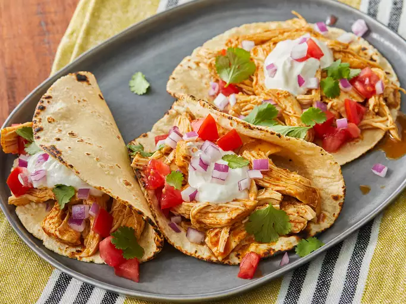

Recipe for tacos

A tasty, easy to make tacos recipe
This recipe requires very few ingredients and will feed your whole family!
Follow the recipe below to make some mouth watering tacos!
Ingredients
- Ground beef
- Taco Seasoning
- Cheese
- Corn Tortillas
Steps
- Lay pan onto stove on medium heat.
- Cook ground beef until brown.
- Add water and taco seasoning to beef and stir regularly.
- In another pan, lay out a tortilla on some vegetable oil.
- Salt and dress tortilla with any toppings you desire.
- Enjoy!